00 开篇：为什么学数据结构
| 项目 | 内容 |
|---|---|
| 课程 | 数据结构 |
| 来源 | [2]--1.0_开篇_数据结构在学什么.mp4 |
| 教材 | 第 1 章 1.1，PDF 第 13-16 页，书页 1-4 |
| 定位 | 导学框架，不是独立的 408 考点 |
| 复习建议 | 首轮理解一次即可，后续不必反复回看 |
图片均从原视频提取，保留完整课件页面；下方文字用于提炼课程框架。

一句话结论
视频的中心句可以作为整门课的总问题：
怎样用程序把现实世界的问题表示成计算机能处理的信息，再选择合适的数据组织方式和运算，高效地处理这些信息？
这句话本身不直接考，但它对应了数据结构题目最核心的思考顺序：
现实问题 → 选择逻辑结构 → 选择存储结构 → 定义运算 → 分析时间和空间代价
后续做算法题时，确定“数据怎么组织”和“操作怎样实现”比一上来写代码更重要。
视频内容与教材概念的对应
视频用了三个生活例子。换成考试语言后，它们正好对应不同层次的数据结构：


| 视频中的例子 | 教材中的概念 | 后续落点 |
|---|---|---|
| 六位数财富 | 用一个变量表示一个数据项；变量的取值范围和操作属于数据类型 | C 语言基础、数据表示 |
| 餐厅排号 | 排队元素之间存在一对一的先后关系，是线性结构；可用数组或队列实现 | 第 2 章线性表、第 3 章队列 |
| 微博用户互相关注 | 用户之间存在多对多的网状关系，是非线性结构 | 第 6 章图 |
教材进一步指出：数据元素不是孤立存在的，元素之间存在的一种或多种特定关系，才构成了“结构”。因此，只保存元素的值还不够，还要保存元素之间的关系。


教材补充：基本概念链
数据、数据元素、数据项
- 数据：信息的载体，是描述客观事物属性的数、字符及能够被计算机程序识别和处理的符号集合。
- 数据元素：数据的基本单位，通常作为一个整体处理。
- 数据项：构成数据元素的不可分割的最小单位。
例如：
学生记录 = 一个数据元素
学号、姓名、性别 = 该数据元素中的不同数据项
所有学生记录 = 一个数据对象
- 数据对象：具有相同性质的数据元素的集合。
这三个概念常以“谁是数据元素、谁是数据项”的选择题出现，必须能结合具体例子区分。
数据类型与抽象数据类型
数据类型包含两部分：
- 一组可能取值的集合；
- 定义在这组值上的一组操作。
抽象数据类型 ADT 是用数学模型描述逻辑结构和抽象操作，不规定这些操作在计算机中怎样存储、怎样实现。
可以记成：
数据类型关心“值域 + 操作”，ADT 关心“逻辑模型 + 抽象操作”，二者都不等同于具体存储实现。
数据结构三要素
教材把数据结构概括为三个不可缺少的方面：
- 逻辑结构：数据元素之间的逻辑关系，与计算机无关。
- 存储结构：逻辑结构在计算机中的表示，也称物理结构。
- 数据的运算：包括运算的定义和实现。
缺掉存储结构和运算，只谈元素之间的关系，并不能构成一个完整的数据结构定义。
1. 逻辑结构
按元素间的关系可分为：
| 类型 | 关系 | 典型例子 |
|---|---|---|
| 集合 | 除“同属一个集合”外没有其他关系 | 集合 |
| 线性结构 | 一对一 | 线性表、栈、队列、串 |
| 树形结构 | 一对多 | 一般树、二叉树 |
| 图状结构 | 多对多 | 有向图、无向图 |
逻辑结构只描述数据元素之间“是什么关系”，不规定这些关系在内存中怎样保存。
2. 存储结构
| 存储方式 | 核心思路 | 主要优点 | 主要代价 |
|---|---|---|---|
| 顺序存储 | 逻辑上相邻，物理位置也相邻 | 可随机存取，存储密度高 | 需要连续空间，插入删除可能移动大量元素 |
| 链式存储 | 用指针表示逻辑关系，不要求物理相邻 | 插入删除灵活，不必连续分配空间 | 指针占额外空间，通常只能顺序访问 |
| 索引存储 | 额外建立“关键字 → 地址”的索引表 | 查找速度较快 | 索引表占空间，更新索引有额外开销 |
| 散列存储 | 由关键字直接计算存储地址 | 查找、插入、删除通常很快 | 可能冲突，需要设计散列函数和处理冲突 |
必须区分：
- 逻辑结构独立于存储结构：同一种逻辑结构可以有多种存储方式。
- 存储结构不能脱离逻辑结构：存储结构是逻辑结构在计算机中的映射。
3. 数据的运算
- 运算的定义：站在逻辑结构层面，说明这个运算要完成什么功能。
- 运算的实现：站在存储结构层面，说明具体怎样操作。
同一个逻辑结构如果采用不同存储方式，即使实现的是同一种运算，效率也可能完全不同。
典型例子：
- 在线性表中插入或删除元素：
- 顺序存储通常要移动大量元素，平均为 \(O(n)\)；
- 链式存储只要已经定位到操作位置，修改指针即可，为 \(O(1)\)。
408 易错点
“数据结构就是数据的集合”不完整。
数据元素之间还必须存在一种或多种特定关系，并包含相应运算。逻辑结构不等于存储结构。
“线性表”首先描述一种线性逻辑关系；顺序表和链表是它的不同存储实现。ADT 不等于具体实现。
ADT 描述逻辑结构和抽象操作，不规定必须用数组、链表还是其他存储方式。“有序表”是逻辑层面的概念。
它只要求元素按关键字有序，既可以用顺序存储，也可以用链式存储。存储结构不是可有可无的附属品。
数据结构三要素缺一不可；讨论算法效率时必须同时看逻辑结构和具体存储实现。同一逻辑结构、同一运算，不代表同一效率。
顺序表和链表是理解这一点最直接的例子，也是第 2 章算法题的基础。
这节课与 408 的真实关系
这一讲没有新增可直接作答的考点，价值主要有两个：
- 给出整门课的问题框架；
- 说明为什么后续既要研究“数据之间是什么关系”，又要研究“怎样存储、怎样操作、代价多大”。
教材对第 1 章的复习提示也指出：本章属于数据结构概述，并不在考研大纲中；但算法的时间复杂度和空间复杂度是本章重点，算法设计题也通常要求分析复杂度。


因此，本讲不需要过度记忆，真正需要重点掌握的是后续的：
- 数据结构三要素及其判断；
- 时间复杂度与空间复杂度分析；
- 针对具体问题选择合适的数据结构。

自测
- 数据元素、数据项和数据对象分别是什么？用“学生记录”举例说明。
- 为什么“只存了元素的值”不等于“定义了完整的数据结构”？
- 抽象数据类型是否规定了数据的存储结构？为什么？
- 同一种逻辑结构能否采用不同存储结构？请举两个例子。
- 为什么顺序表和链表可以具有相同的逻辑结构，却具有不同的操作效率？
后续补充位置
- 学完 1.2 后，在本章笔记中补充时间复杂度和空间复杂度的统一分析框架。
- 学完第 2、3 章后，把“线性表、栈、队列”的具体存储与操作补到逻辑结构分类下面。
- 学完第 6 章后，把“用户关注关系”正式落到图的存储结构和遍历方法。
1.1 数据结构的基本概念
| 项目 | 内容 |
|---|---|
| 课程 | 数据结构 |
| 来源 | [3]--1.1_数据结构的基本概念.mp4 |
| 教材 | 第 1 章 1.1，PDF 第 13-16 页，书页 1-4 |
| 定位 | 概念辨析与全书框架 |
| 重点 | 数据结构 vs 数据对象、三要素、运算的定义与实现、ADT |
图片均从原视频提取，保留完整课件页面；下方文字用于归纳考点、区分易错概念和补充教材内容。
一句话结论
数据元素不是孤立的一组值；元素之间还必须存在关系，并配上相应运算，才构成数据结构。
学习任何一种数据结构，都从三个问题入手：
- 元素之间是什么逻辑关系？
- 这种逻辑关系在计算机中怎样存储？
- 要对它做哪些运算，具体怎样实现？
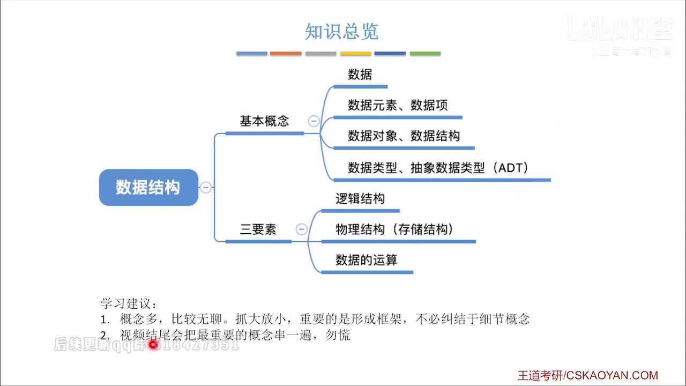
一、基本概念链
数据的范围
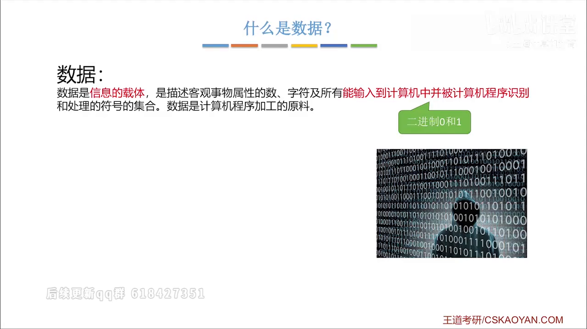
| 概念 | 核心定义 | 关键区别 |
|---|---|---|
| 数据 | 信息的载体，是能被计算机程序识别和处理的符号集合 | 范围最大 |
| 数据元素 | 数据的基本单位，通常作为一个整体处理 | 可以由多个数据项组成 |
| 数据项 | 构成数据元素的不可分割的最小单位 | 不可再分 |
| 数据对象 | 具有相同性质的数据元素的集合 | 只要求性质相同，不要求元素之间有特定关系 |
| 数据结构 | 相互之间存在一种或多种特定关系的数据元素的集合 | 必须强调元素之间的关系 |
用排队系统理解
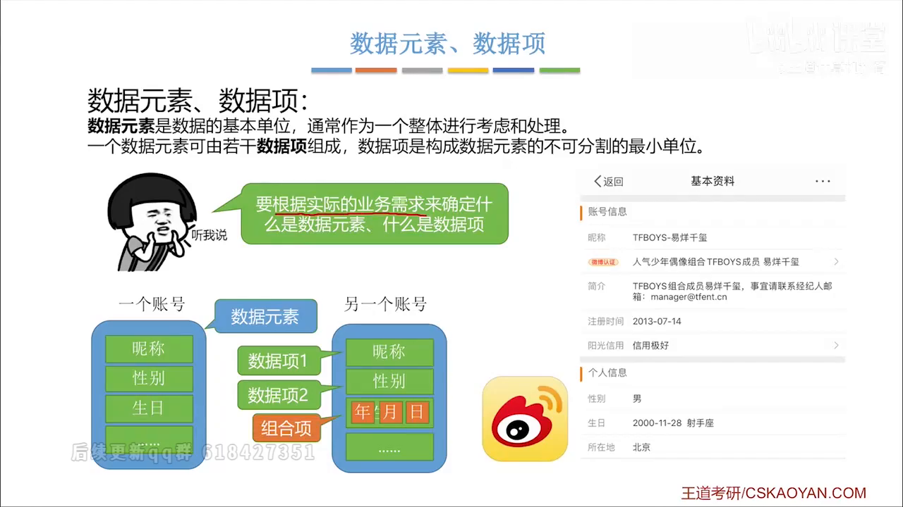
在餐厅排号系统中，可以这样划分：
一波顾客的排队信息 = 一个数据元素
号码、取号时间、就餐人数 = 该数据元素中的数据项
全国所有门店的排队顾客信息 = 一个数据对象
某个门店中按号码先后排队的信息 = 一个数据结构
其中：
- 数据对象只关心“这些元素具有相同性质”。
- 数据结构还必须关心“这些元素之间有什么关系”。
同一组数据元素，是否构成数据结构，要看是否讨论它们之间的特定关系。
“数据元素”和“数据项”没有脱离业务场景的绝对边界。要根据实际处理的问题，决定什么作为一个整体、什么作为整体中的组成项。
什么是“结构”
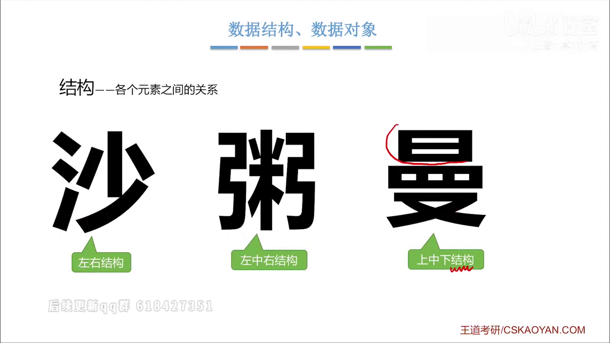
“结构”不是指元素本身，而是指元素之间的联系方式。汉字有左右、上下结构；排队有先后结构；文件目录有层次结构。
数据结构与数据对象
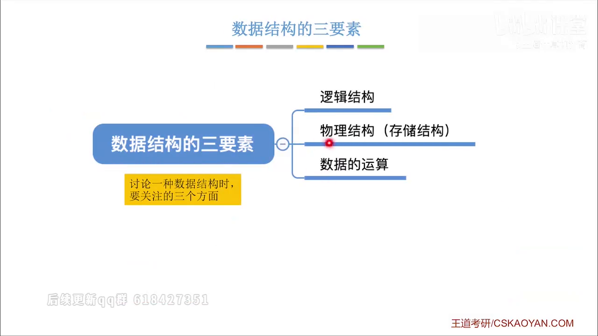
两者的判断标准不同：
- 数据对象：只要求元素性质相同；
- 数据结构：还要求元素之间存在一种或多种特定关系。
二、数据结构的三个要素
数据结构的三要素包括：
- 逻辑结构：数据元素之间的逻辑关系，例如集合、线性、树形和图状结构。
- 存储结构（物理结构）：逻辑结构在计算机中的表示，包括顺序、链式、索引和散列存储。
- 数据的运算：根据逻辑结构定义需要完成什么操作，再根据存储结构实现具体操作。
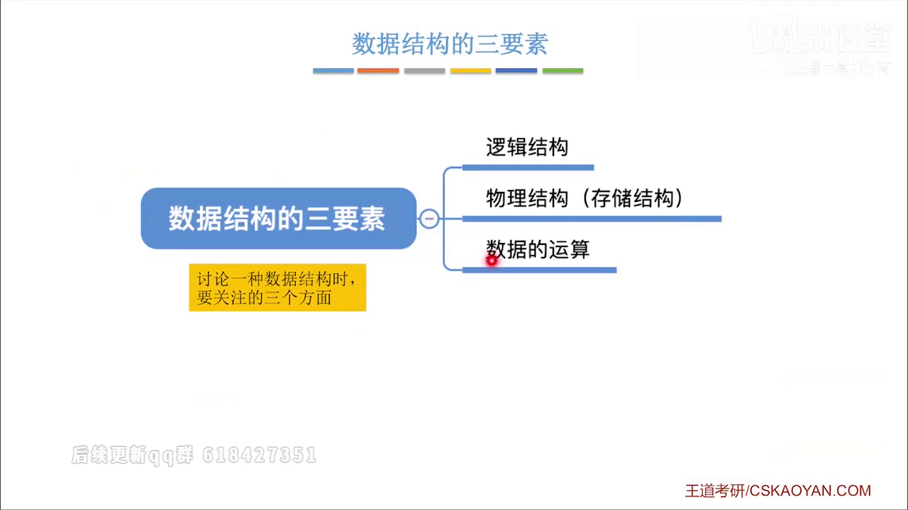
1. 逻辑结构
逻辑结构描述数据元素之间的逻辑关系，不涉及它们在计算机中怎样存储。
| 逻辑结构 | 元素间关系 | 直观例子 |
|---|---|---|
| 集合 | 除同属一个集合外，没有其他关系 | 同一烤盘上的食物 |
| 线性结构 | 一对一 | 排队、烤串、线性表、栈、队列 |
| 树形结构 | 一对多 | 思维导图、文件目录、树、二叉树 |
| 图状或网状结构 | 多对多 | 微信好友关系、无向图、有向图 |
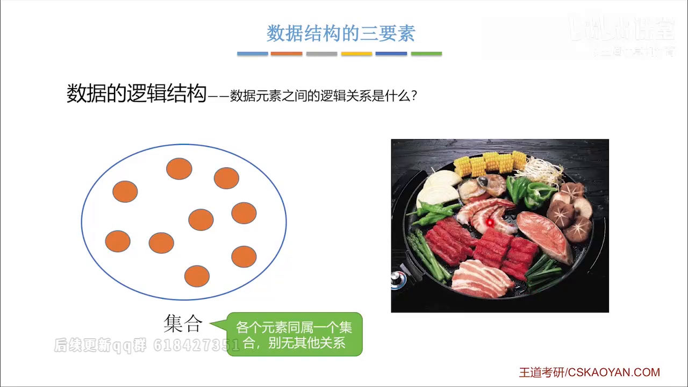
集合结构
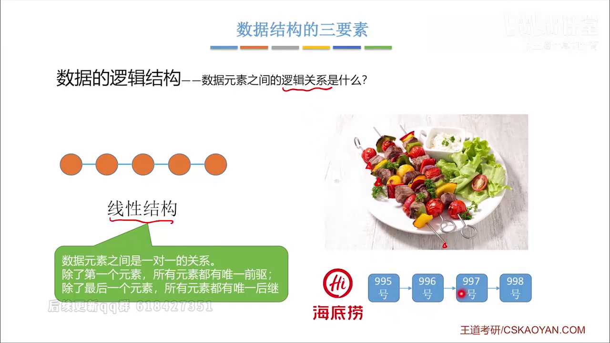
元素之间除了“同属一个集合”外没有其他关系。
线性结构
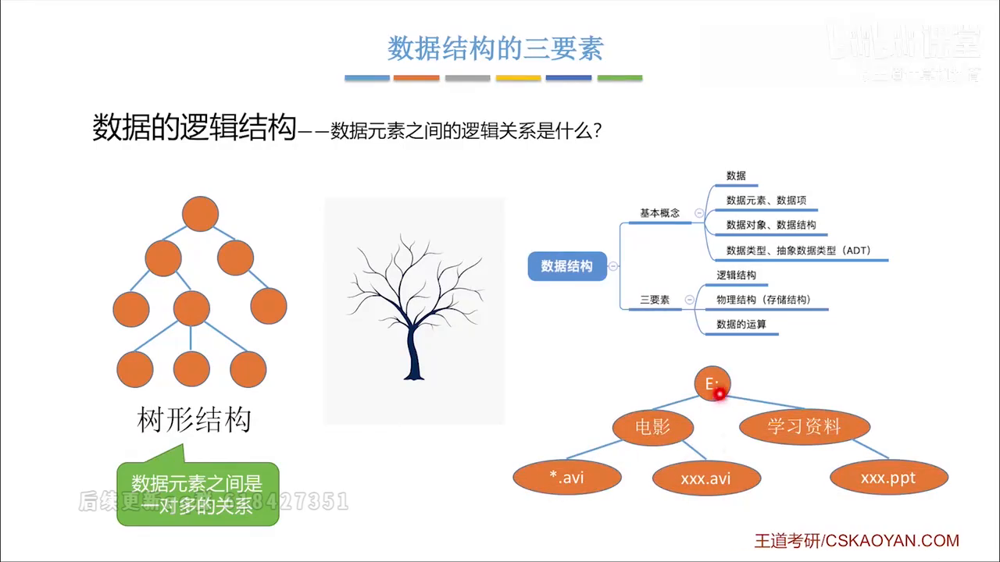
元素之间是一对一关系；除首元素外各有唯一前驱，除尾元素外各有唯一后继。
树形结构
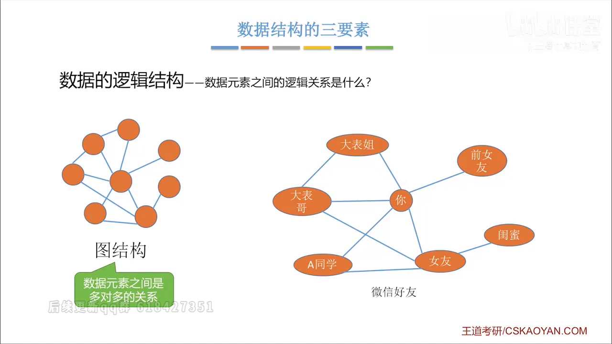
元素之间是一对多关系，典型例子是目录、思维导图和二叉树。
图状结构
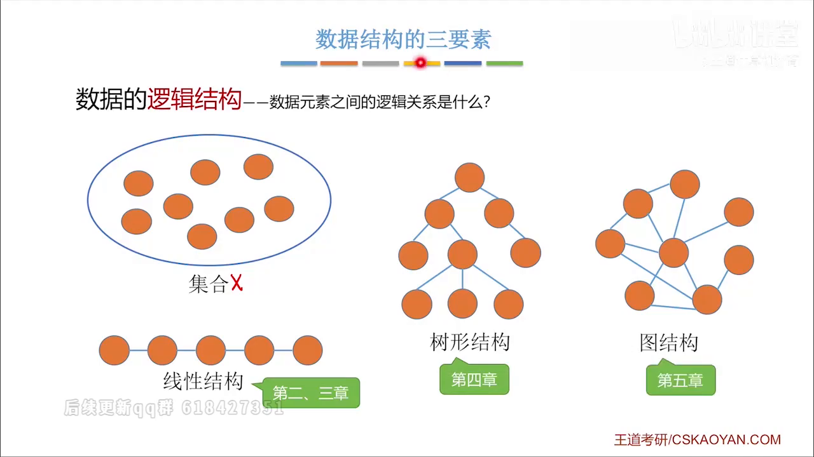
元素之间是多对多关系，典型例子是好友关系和交通网络。
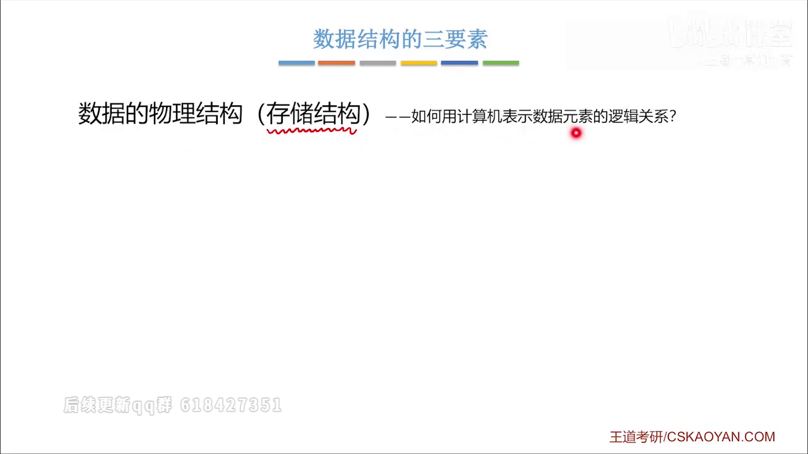
线性结构要抓住前驱和后继：
- 第一个元素没有前驱；
- 最后一个元素没有后继；
- 其余元素各有唯一前驱和唯一后继。
集合结构在本课程中基本不单独展开。后续主要学习：
- 第 2、3 章：线性结构；
- 第 5 章：树形结构；
- 第 6 章：图状结构。
2. 存储结构
存储结构又叫物理结构，研究逻辑关系怎样在计算机中表示。
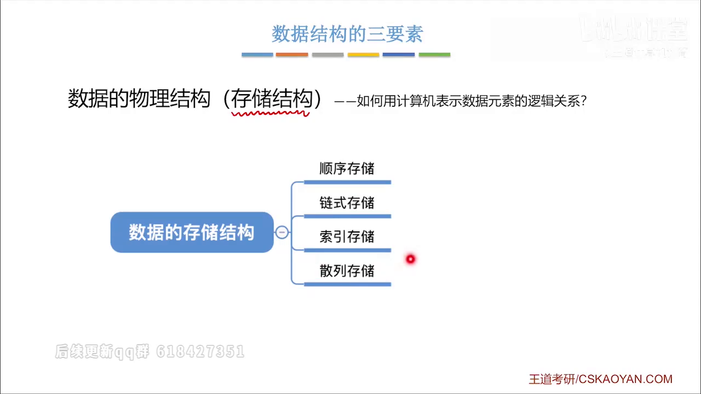
| 存储结构 | 表示关系的方法 | 特点 |
|---|---|---|
| 顺序存储 | 用物理位置相邻表示逻辑相邻 | 必须占用连续空间，可随机访问 |
| 链式存储 | 用指针记录下一个元素的地址 | 不要求物理位置相邻，但需要额外指针空间 |
| 索引存储 | 建立“关键字 → 地址”的索引表 | 用额外索引表换取更快的查找 |
| 散列存储 | 由关键字直接计算存储地址 | 查找通常很快，但要处理冲突 |
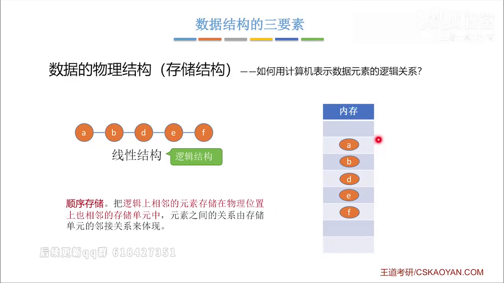
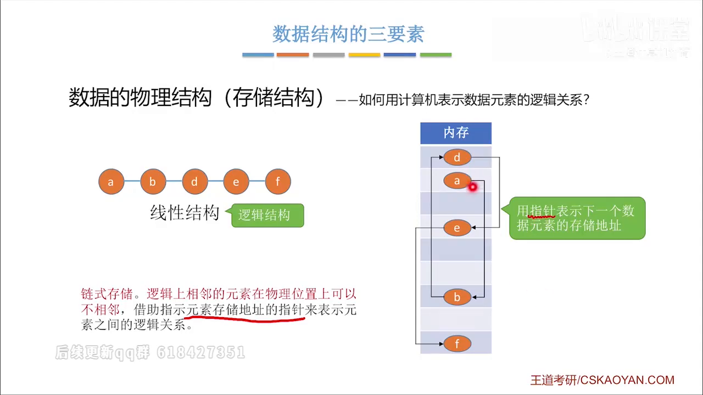
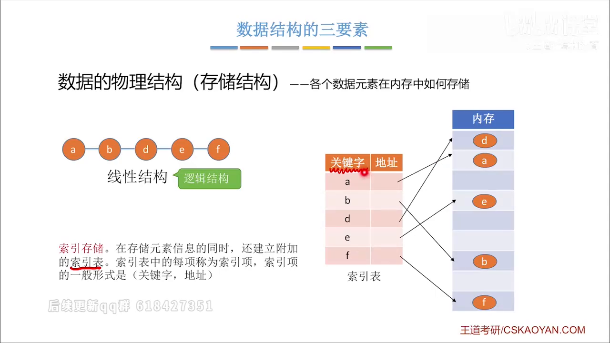
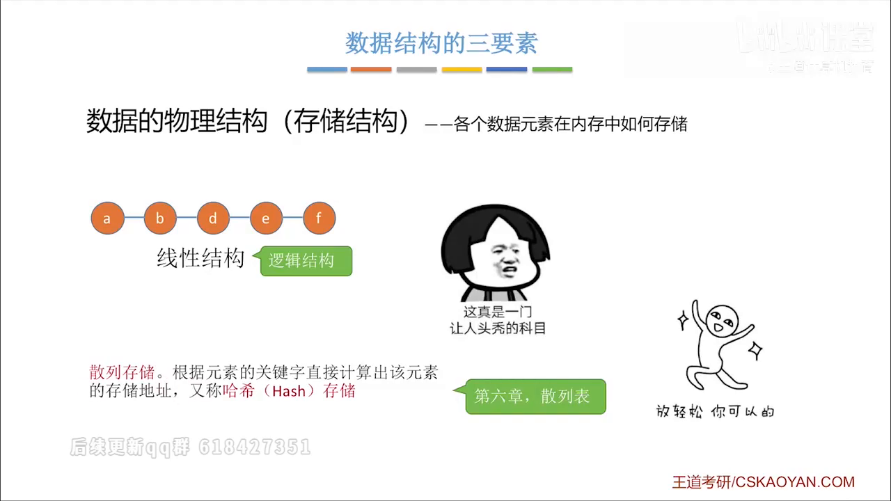
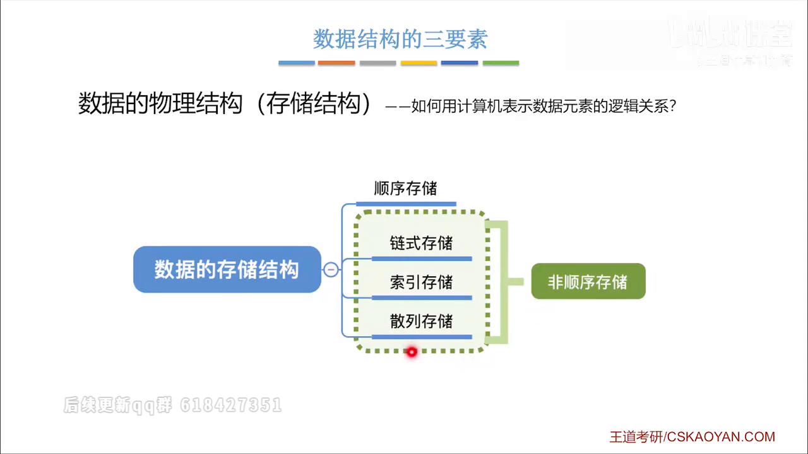
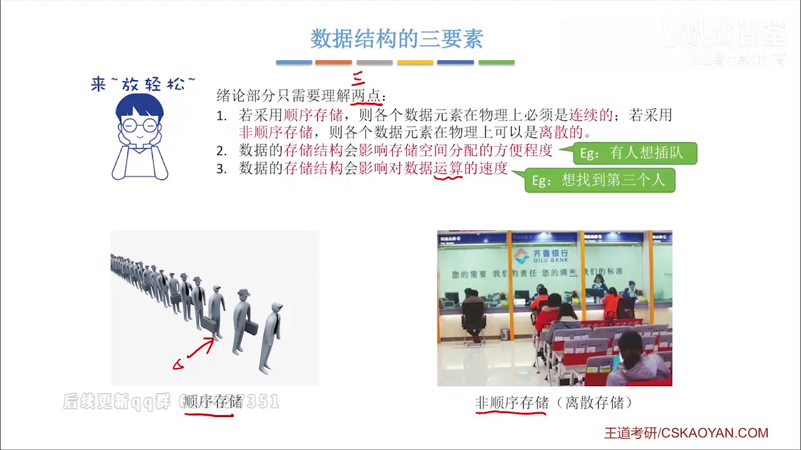
通常把链式、索引和散列存储统称为非顺序存储：
- 顺序存储中，数据元素在物理上必须连续；
- 非顺序存储中，数据元素在物理上可以是离散的。
关键字是能够区分不同数据元素的数据项。例如排队号码可以唯一区分每一波顾客，因此可作为关键字。
存储结构至少会从两个方向影响算法：
- 空间分配的方便程度：顺序存储插入元素时可能要让后面的元素整体后移；链式存储只需调整指针。
- 运算速度：顺序存储可以直接定位第 \(i\) 个元素；链式存储通常要沿指针逐个寻找。
补充辨析：索引存储与散列存储
以下为概念补充，不是本讲原课件内容。
两种结构在逻辑上都可以看成“键 → 值”的映射，但它们在计算机中保存这个映射的方式不同：
- 索引存储：额外保存一张索引表，显式记录“关键字 → 地址”。
- 散列存储：不保存这样的地址索引表，而是通过哈希函数由关键字直接计算存储位置。
以“学号 → 学生记录”为例：
索引存储：学号 → 索引表（学号，地址）→ 学生记录
散列存储：学号 → h(学号) → 哈希桶 → 学生记录
| 对比项 | 索引存储 | 散列存储 |
|---|---|---|
| 映射保存在哪里 | 一张独立的索引表中 | 由哈希函数即时计算得到 |
| 索引项或桶中保存什么 | 通常是“关键字 + 存储地址” | 通常是“关键字 + 实际数据”或指向数据的指针 |
| 数据本身在哪里 | 可以在索引表之外的其他存储区域 | 通常在哈希桶中，或由桶指向实际数据 |
| 查找路径 | 查索引表得到地址，再读取数据 | 计算哈希值定位桶，再读取数据 |
| 是否强调顺序 | 可以建立有序索引 | 通常不保留元素的顺序 |
| 主要关注点 | 索引表空间、维护索引的代价 | 哈希函数、冲突处理和装填因子 |
核心区别：
索引表把“键对应哪个存储地址”明确保存下来；散列表则通过哈希函数把这个地址直接计算出来。
3. 数据的运算
数据运算要区分两个层次：
- 运算的定义：站在逻辑结构层面，说明要完成什么功能。
- 运算的实现：站在存储结构层面，说明具体怎样操作。
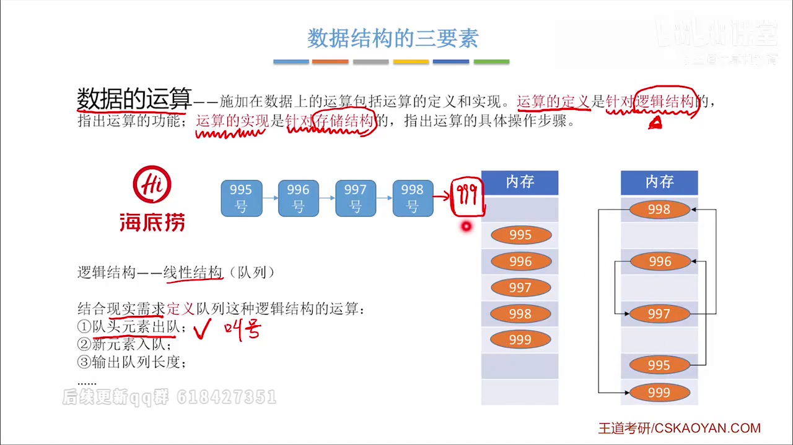
例如，队列需要定义“入队”和“出队”：
- 定义只说明新元素从队尾进入、队头元素离开；
- 用顺序存储或链式存储实现时，具体代码完全不同。
因此：
同一种逻辑结构和同一种运算，换一种存储方式后，实现方式和运行效率都可能改变。
三、数据类型与抽象数据类型
数据类型
数据类型由两部分组成：
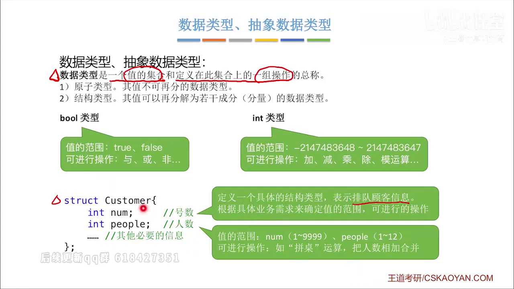
- 一组可能取值的集合；
- 定义在这组值上的一组操作。
原子类型
值不可再分。例如：
bool：取值通常为true、false，可做与、或、非等操作；int：有确定的整数取值范围，可做加、减、乘、除、取模等操作。
结构类型
值可以继续分解成若干分量。例如 C 语言中的结构体：
struct Customer {
int num; // 排队号码
int people; // 就餐人数
};
它的取值范围和可执行操作由具体业务决定，例如：
num限定在某个号码范围内；people限定在某个就餐人数范围内；- 可以定义“拼桌”操作，把两波顾客的人数合并。
抽象数据类型 ADT
抽象数据类型是抽象的数据组织及与之相关的操作。
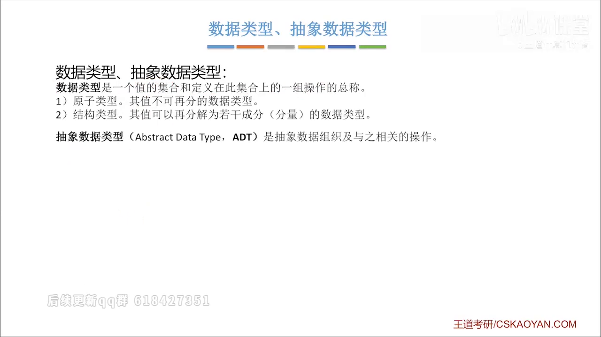
用已经学过的三要素来理解：
- ADT 用数学化语言定义逻辑结构；
- ADT 定义数据的运算；
- ADT 不规定具体存储结构，也不讨论运算的具体实现。
只有在计算机中真正实现这个数据结构时，才需要进一步选择顺序、链式、索引或散列存储。
可以用下面的层次理解：
抽象数据类型：逻辑关系 + 抽象运算
↓ 选择存储方式
具体实现：存储结构 + 运算实现
选择题中常见的结论是：
抽象数据类型可以用“数据对象、数据关系、基本操作集”来刻画，因此可以用来定义一个完整的数据结构。
这里的“完整”是指抽象定义完整，不代表已经确定了计算机中的存储实现。
四、408 易错点
数据结构不等于数据对象。
数据对象只要求元素性质相同；数据结构还必须强调元素间的特定关系。逻辑结构不等于存储结构。
队列在逻辑上是一对一的线性结构，但既可以顺序存储，也可以链式存储。“线性”不等于“连续存放”。
线性结构描述的是逻辑关系，不代表元素在物理内存中一定相邻。顺序存储和链式存储不是逻辑结构的分类。
它们只是同一逻辑结构的不同物理实现方式。ADT 不规定存储结构。
ADT 关注逻辑模型和抽象操作；具体采用数组还是链表属于实现阶段。运算也是数据结构的组成部分。
两种数据结构即使逻辑结构和存储结构相同，只要运算语义不同，也可以是不同的数据结构。
例如，普通二叉树与二叉排序树的组织方式可以相似，但查找运算的规则和效率不同。存储结构不同，会改变运算效率。
在线性表中按位置插入或删除元素时：- 顺序存储通常要移动大量元素，平均为 \(O(n)\)；
- 链式存储如果已经定位到操作位置，修改指针即可，为 \(O(1)\)。
“有序表”属于逻辑层面的概念。
它只要求元素按关键字有序，可以用顺序存储，也可以用链式存储。存储数据元素时，不仅保存值，还要保存关系。
如果只保存每个元素的数值，而不保存元素之间的逻辑联系，就无法恢复完整的数据结构。
五、快速自测
- 数据元素、数据项、数据对象三者如何区分？
- 为什么“数据对象的集合”不一定已经是“数据结构”？
- 逻辑结构分为哪四类？各自的关系是什么？
- 顺序、链式、索引、散列存储分别怎样表示元素之间的关系？
- 运算的定义和运算的实现分别针对什么层面？
- 为什么 ADT 不需要规定存储结构？
- 两种数据结构如果逻辑结构和存储结构都相同，还可能不同吗？
六、本小节怎么复习
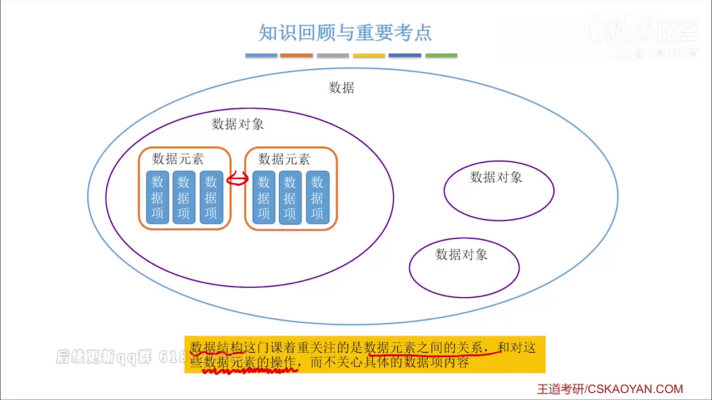
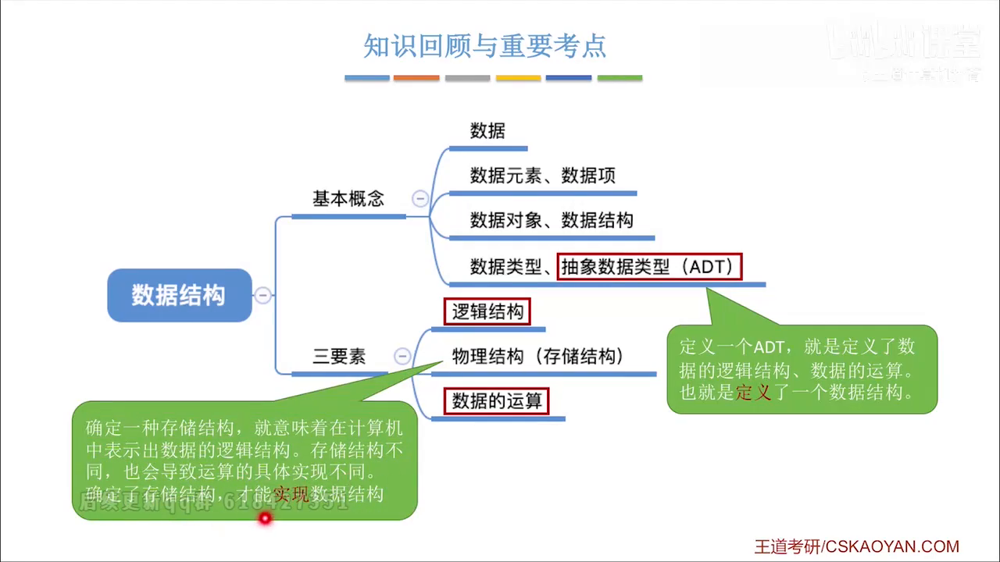
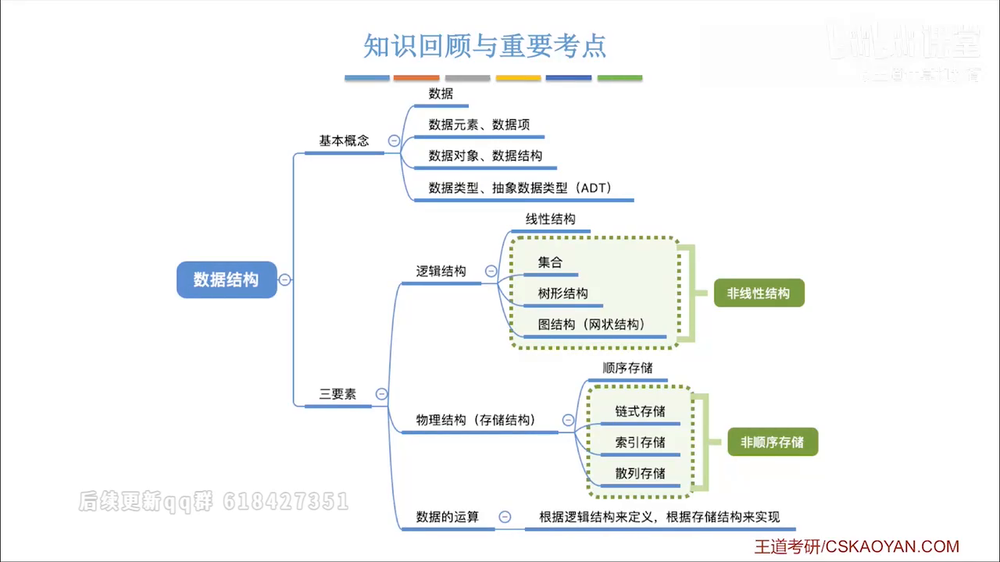
这一小节概念多，但不需要逐字背诵。第一轮抓住以下判断链即可：
是不是在讨论元素之间的关系？
↓ 是
关系是一对一、一对多，还是多对多？
↓
选择什么存储方式表示这种关系？
↓
需要定义哪些运算？不同存储方式下怎样实现？
真正需要熟记的是概念之间的边界，而不是视频中的具体生活例子。后续学习线性表、栈、队列、树和图时，每个章节都会重复使用这套三要素框架。